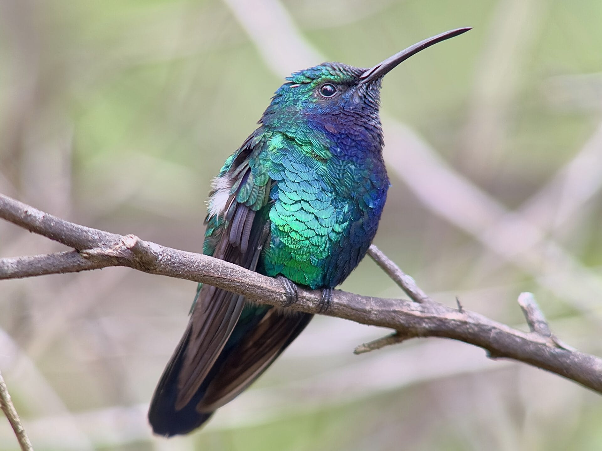

Дивовижні пташки колібрі примітні не тільки своїми мініатюрними розмірами або цікавою будовою крил. Вони ведуть спосіб життя, не схожий з більшістю інших птахів, і вже тому вони є центром уваги для орнітологів. Ці пташки здаються зовсім невагомими, вони легко пурхають від квітки до квітки, переміщаючись при цьому з вражаючою швидкістю.
